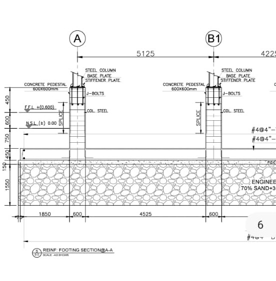

Feed Mill Project: Powering Agricultural Innovation
Following the completion of the Residential House project, I stepped into the role of Site Engineer for a Feed Mill project with Al Mustakim Enterprises at the Islamabad Feed Mill, Okara Unit. Launched in February 2022 with a budget of 41 million PKR, this year-long endeavor was a significant leap into industrial construction. My responsibilities encompassed structural supervision, material selection, and ensuring compliance with rigorous engineering standards. Coordinating construction schedules, managing a sizable workforce, and enforcing quality control were central to delivering this project efficiently, further honing my expertise in industrial construction, site management, and project planning.
The Feed Mill, designed to support agricultural productivity, required meticulous attention to structural integrity and operational functionality. I oversaw the construction of key components—steel frameworks, reinforced concrete silos, and processing units—using tools like AutoCAD for design validation and Primavera P6 for scheduling. Material procurement was a critical task; I sourced high-grade steel and durable concrete to withstand the facility’s heavy operational loads, ensuring longevity and safety. This project tested my ability to manage complex timelines and resources under a budget nearly double that of my previous residential assignment.
Documentation played a pivotal role in this project. I captured on-site photographs of key stages—foundation laying, structural erection, and equipment installation—providing a visual chronicle of progress. These images not only showcased the quality of workmanship and adherence to engineering standards but also highlighted my contributions to supervision, coordination, and quality assurance. Sharing these updates with stakeholders fostered trust and transparency, a practice I carried forward from earlier projects.
One of the biggest challenges was coordinating a workforce of over 40 personnel across a sprawling site while adhering to a tight one-year timeline. I implemented shift-based schedules and regular safety drills, achieving zero incidents despite the industrial scale. The project also demanded compliance with environmental regulations; we integrated dust control systems and waste management protocols to minimize ecological impact, aligning with sustainable construction principles I’d championed in the Water Tank project.
The Feed Mill’s design catered to modern agricultural needs, featuring automated feed processing systems and robust storage silos capable of handling 500 tons of grain. Completing this project in February 2023 was a proud moment, as it directly supported local farmers by enhancing feed production capacity. This experience deepened my understanding of industrial infrastructure and reinforced my commitment to delivering projects that blend technical excellence with practical utility.
Key Points
- Location: Islamabad Feed Mill, Okara Unit
- Company: Al Mustakim Enterprises
- Budget: 41 million PKR
- Start Date: February 2022
- Duration: 1 year
Project Highlights
- Completed within one year despite complex scope
- Integrated sustainable dust and waste management systems
- Achieved zero safety incidents with a 40+ workforce
- Documented progress with detailed site photography
- Supported local agriculture with a 500-ton capacity facility
Customer Views & Comments
"This feed mill has transformed our operations. The reliable construction and thoughtful design have boosted our productivity significantly." – Muhammad Aslam, Local Farmer
"Al Mustakim Enterprises exceeded our expectations with this project. The quality of execution and timely completion were remarkable, especially given the scale." – Hassan Raza, Client Manager
"The team’s technical expertise and attention to detail were exceptional. This project sets a high standard for industrial construction in the region." – Engr. Saad Qureshi, Structural Consultant